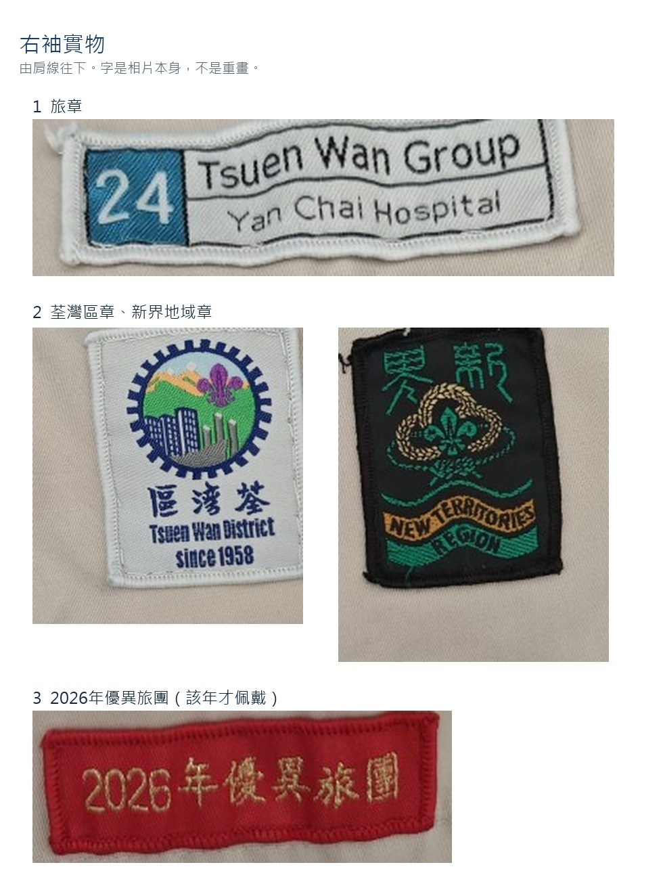
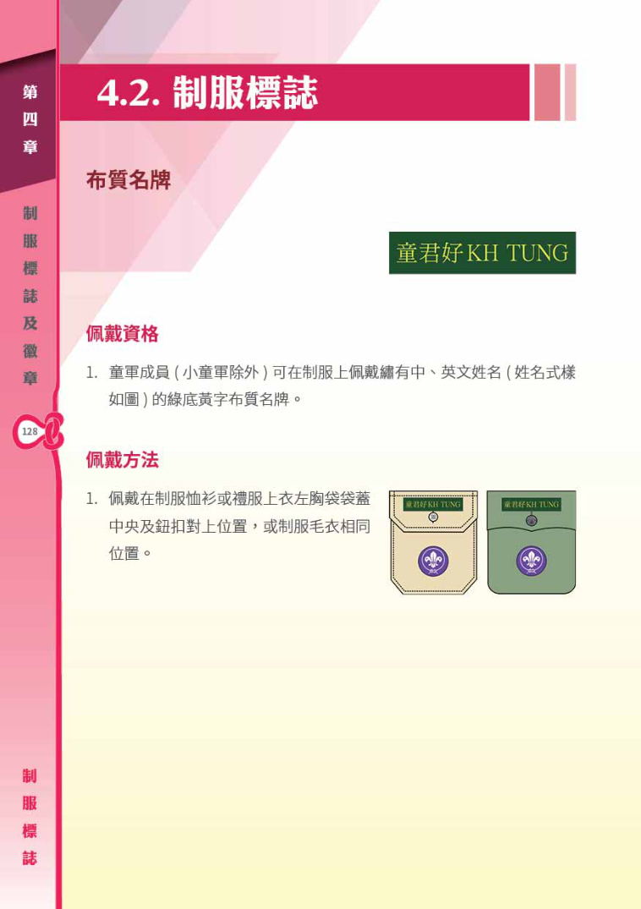

有用文件
以下連結來自香港童軍總會及其支部網頁。新修訂的各支部訓練綱要已於 2026 年 8 月 15 日生效。
儀容與制服
本旅旅巾是淺藍色、白邊。


已宣誓成員的佩戴
宣誓之後，章會隨年資和考核慢慢加上。青少年成員由 2024 年 4 月 1 日起，按青少年活動通告第 13/2023 號佩戴。本旅旅巾是淺藍色、白邊。本旅是陸上旅，海童軍的白帽和空童軍的灰藍帽不用戴；海上、航空活動章要考獲才佩戴。
縫章
章、布條和優異旅團都要用線縫穩。雙面膠紙、釘書機、膠水、漿糊都不要用。膠一洗就脫，還會留漬；釘書釘會刮到人，也會弄破恤衫。先對準位置，線藏在章的邊緣裡。
右袖的旅章和優異旅團
幼童軍、童軍、深資、樂行，右袖由上而下是旅章，中間地域章和區章並排，其下是世界童軍組織的獎章，最多並排四枚。童軍的小隊章也在右袖。最底是優異旅團章。活動章、專科章、急救章、拯溺布章和社區參與章縫在左袖。
本旅旅章是藍底白字「24」，英文寫 Tsuen Wan Group、Yan Chai Hospital。旁邊是荃灣區章和新界地域章。紅底金字要該年獲頒才佩戴，今年是「2026年優異旅團」。

胸前袋蓋
右胸袋中央是本支部的進度性獎章和最高獎章，四個支部都是這個位置。服務獎章和領導才獎章縫在進度性獎章下面；兩章一起戴時，服務獎章在上面。右胸袋蓋上方是宗教章或公教章、紀念章、升上另一支部後的最高獎布標，以及先修章。宗教章和公教章不要同時佩戴，公教章只佩戴最高一級。最高獎布標由右至左，最多三塊，直到新支部的訓練完成。同一支部的獎章和布標不要同時佩戴。
紀念章同一時間只佩戴一個，放在上層外側。總會或地域活動可佩戴 6 個月，區或旅的活動 3 個月，海外交流不超過 3 個月，期滿便除下。
左胸袋蓋上方是香港章，離袋蓋 3 厘米，幼童軍、童軍、深資、樂行都是這個位置。香港章下面是服務年星。左胸袋蓋上是會員章；佩戴和平使者章時，放在會員章的位置，不用再戴會員章。隊長章縫在會員章下面。
服務年星
顏色、數目和左胸怎樣排，看手冊這兩頁。每個支部只留最高的一年，由左至右。宣誓滿一年是「1」。晉團之後，以前支部的年星可以留着，直到成為成年成員。小童軍的年星要晉升幼童軍之後才可佩戴。
帽章：幼童軍男團員是深綠黃間鴨舌帽、女團員是深綠闊邊帽，帽徽朝前。童軍和樂行是深綠貝雷帽，深資是棗紅貝雷帽，帽章在左眼上方約兩厘米。
姓名布條

隊長章
幼童軍的副隊長、隊長，和童軍的副隊長、隊長、團隊長，都縫在左胸袋、會員章下面。
童軍小隊章
童軍把所屬小隊的章縫在右袖縫線上方三厘米。各小隊顏色不同。
其他常見的章
入伍較久、考獲了的，才按這幾頁縫。未考獲的不用縫。興趣章和活動章的考取方法在各支部訓練綱要。
最高獎布標
宗教章和公教章
家庭章和先修章
服務獎章和領導才獎章
社區參與章
進度性獎章和最高獎章
幼童軍
右胸袋是進度性獎章和金紫荊獎章。右袖是旅章、地域章和區章並排、世界童軍組織的獎章，最底優異旅團章。左袖是活動章，三角由初級到高級，海上活動是藍三角。左胸上方是香港章和黃年星，袋蓋是會員章或和平使者章，隊長章在會員章下面。右胸袋蓋上方是宗教章或紀念章，以及童軍先修章。家庭章不用再縫。

童軍
右胸袋是進度性獎章或總領袖獎章，服務獎章和領導才獎章在它下面。右袖是旅章、地域章和區章並排、世界童軍組織的獎章、小隊章，最底優異旅團章。左袖是專科章，四組是教導金、服務紅、技能藍、興趣綠，以及航空活動章、海上活動章、香港青年獎勵計劃獎章、急救章、拯溺布章、社區參與章。未考獲的不用縫。左胸上方是香港章和綠年星，袋蓋是會員章或和平使者章，隊長章在會員章下面。右胸袋蓋上方是宗教章或紀念章、以前支部的最高獎布標和先修章。

深資童軍
棗紅貝雷帽，兩邊肩章是紅色。右胸袋是進度性獎章和榮譽童軍獎章。右袖是旅章、地域章和區章並排、世界童軍組織的獎章，最底優異旅團章。左袖下段是段章和金帶，四段為自立、責任、活動、探險；另有航空和海上活動章、香港青年獎勵計劃獎章。急救章在左袖上方，拯溺布章在急救章下面，社區參與章再在其下。左胸上方是香港章和紅年星，袋蓋是會員章或和平使者章。右胸袋蓋上方是宗教章或紀念章，以及以前支部的最高獎布標。

樂行童軍
深綠貝雷帽，兩邊肩章是綠色。右胸袋是進度性獎章和貝登堡獎章。左胸上方是香港章和藍年星，袋蓋是會員章或和平使者章。寰宇童軍章在右袖，地域章和區章下面。右袖其餘是旅章、地域章和區章並排，最底優異旅團章。左袖是香港青年獎勵計劃獎章、急救章、拯溺布章和社區參與章、ATAS 標誌；急救章和拯溺布章一起戴時，急救章在前。右胸袋蓋上方是宗教章或紀念章，以及以前支部的最高獎布標。

成年領袖
成年領袖：右袖是職級肩章、旅章、地域章、區章、優異旅團章。左袖是職級肩章、拯溺布章、ATAS 標誌。右胸上層最多兩項，次序較前的在左：公教章、榮譽童軍或貝登堡獎章領袖標誌、和平使者章、紀念章。下層是勳條，不限枚數，每行不多於三個。左胸下層是政府勳條，同樣每行不多於三個。轉為成年成員後，便不再佩戴服務年星。男領袖的帽章在深綠貝雷帽左眼上方約兩厘米；女領袖的常規硬帽是深綠金邊，帽章在硬帽右方。木章和基維爾巾圈見這一頁。

訓練綱要
四個支部的訓練綱要在這一頁直接看，不用另開檔案。新修訂已於 2026 年 8 月 15 日生效。
幼童軍
童軍
深資童軍
樂行童軍
- 小童軍活動指引
- 新修訂支部訓練綱要通告（第 22/2026 號，列明生效日和過渡安排）
獎章
各支部的進度性獎章和活動徽章都寫在該支部訓練綱要裡。成年成員的勳章和獎勵見《政策、組織及規條》第六章。
政策與安全
- 政策、組織及規條（誓詞、規律、旅團組織、儀式）
- 保護童軍成員免受傷害政策（2025 年 6 月 1 日起生效）
- 支部成員徽章佩戴指引（第 13/2023 號，2024 年 4 月 1 日起全體依此佩戴）
- 會員章加入保護成員內容
- 活動安全指引通告目錄（戶外、天氣、水上、意外通報、保險）
- 本旅木章持有人